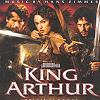

Celtic Lyrics Corner > Artists & Groups > Moya Brennan > King Arthur
|  |
King Arthur
(2004) |
| Tracks : |
1.
Tell Me Now (What You See)
2. Woad To Ruin 3. Do You Think I'm Saxon? 4. Hold The Ice 5. Another Brick In Hadrian's Wall 6. Budget Meeting 7. All Of Them! |